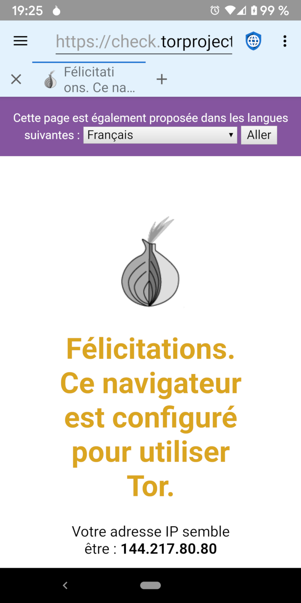

Proxies and Their Limits Proxies and Their Limits
Proxies and Their Limits Proxies and Their LimitsIl existe deux catégories générales de mauvais acteurs qui veulent porter atteinte à la vie privée du Web: des gouvernements malveillants ayant accès à des fournisseurs de services Internet (FAI) et des méga entreprises exploitant des réseaux sociaux et publicitaires. Proxies like TOR (The Onion Router) and I2P (the Invisible Internet Project) are useful in protecting privacy from malicious governments (which spy on traffic in transit) but not from mega corporations (which embed malicious code on web servers).
 Gouvernements Malicieux
Gouvernements MalicieuxLes gouvernements malveillants espionnent souvent leurs citoyens pour punir la dissidence ou les activités liées aux droits de l'homme. Ils exploitent généralement les FAI locaux ou peuvent les obliger à divulguer des informations indiquant chaque adresse IP visitée par chaque utilisateur. Layered proxies are designed to defeat this infringement of privacy by encrypting the traffic from a user’s device and routing it through multiple servers on the internet before sending it on to the final destination. This means that no individual ISP, server, or website, can know both the IP address of the user’s device and the IP address of the final web server. Malicious governments and the ISPs they control cannot tell which web servers a user is accessing, although they can tell that the user is using a layered proxy service. In some parts of the world, using proxies could be construed as an evidence of illegal behavior (“If you didn’t have anything to hide you wouldn’t be encrypting your traffic”) and users could be punished because governments assume they are doing something that is prohibited. Thus, proxies can be helpful, but they aren’t a panacea.
Méga entreprisesLorsqu'un utilisateur se connecte à un serveur Web, celui-ci peut voir l'adresse IP de l'utilisateur. Bien que ce ne soit pas une science parfaite, les adresses IP peuvent être transformées en adresses physiques avec une juste précision. Small web servers typically rely on IP addresses to identify the location of the users visiting their site. Proxies are a good solution to mask the user’s location from these servers. Mais les grandes méga-entreprises propriétaires de réseaux de médias sociaux et de publicité utilisent tout un profil d'informations conçu pour suivre les utilisateurs sur des appareils et des adresses IP. Ces profils utilisent diverses techniques pour identifier les utilisateurs, notamment JavaScript, les cookies, les identifiants de suivi et les empreintes digitales du navigateur. Parce que la grande majorité des sites Web sur Internet téléchargent une annonce publicitaire sur l'un des principaux réseaux ou intègrent des icônes de réseaux sociaux avec leur code JavaScript associé, ces sociétés ont créé des profils pour presque tous les utilisateurs en ligne et peuvent suivre leur activité Internet sur des sites indépendants.
Ils suivent chaque site visité, tout ce qui est acheté, chaque carte de crédit utilisée pour effectuer un achat, chaque adresse à laquelle les articles sont expédiés, et les métadonnées GPS de chaque image téléchargée sur Internet. Ils établissent un profil de l'âge, du sexe, de l'état matrimonial, de l'adresse, des affiliations politiques, des appartenances religieuses, de la situation de famille, du nombre d'animaux de compagnie, et tout ce qu'ils peuvent mettre la main dessus. Ils achètent même des bases de données de transactions par carte de crédit dans les magasins locaux, afin de pouvoir suivre les habitudes d'achat hors ligne des utilisateurs dans leurs profils. Because they already have much more accurate address information about a user than an IP address discloses, proxies provides no real privacy protection against mega corporations.
La meilleure protection contre la confidentialité des grandes entreprises consiste à naviguer sur le Web avec JavaScript désactivé, le suivi du blocage des réseaux publicitaires, la désactivation des cookies et du stockage du DOM et en utilisant un navigateur difficile à identifier.
 Using Proxies
Using ProxiesDespite their limitations, proxies can be useful in some circumstances. Tor and I2p have Android apps that make it easy to use their proxy networks. When proxying is turned on in Privacy Browser, the app bar will have a light blue background instead of the default light grey. Because traffic is being routed through several proxy nodes, using a layered proxy is often much slower than connecting directly to the internet.
 Téléchargement de fichiers via Tor
Téléchargement de fichiers via TorWhen Orbot is operating in proxy mode, browsing the internet using Privacy Browser will be routed through the proxy, but file downloads will not. This is because Privacy Browser uses Android’s builtin download manager to download files, which doesn’t have a proxy option. Users who want to download files via Orbot need to enable its VPN mode. There is currently no way to download files through I2P.